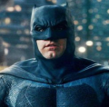
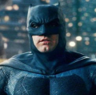

Descuentos 20%
Héroes
 

Batman
Bruce Wayne es el único personaje que se identifica como Batman y aparece en Batman, Detective Comics, Batman y Robin, y Batman: The Dark Knight. Dick Grayson vuelve al manto de Nightwing


Harley Quinn
La creación de Harley Quinn fue una idea de último minuto propuesta por el escritor estadounidense Paul Dini para modificar una escena del vigésimo-segundo episodio de Batman: la serie animada
Batman
Bruce Wayne es el único personaje que se identifica como Batman y aparece en Batman, Detective Comics, Batman y Robin, y Batman: The Dark Knight. Dick Grayson vuelve al manto de Nightwing